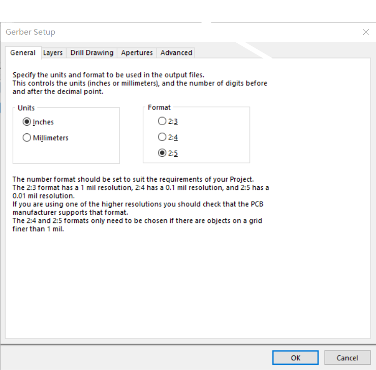

GERBER文件有很多优点，减少出错，防止源文件泄露，文件尺寸小，使用diy字体时方便……
0x00 必需基础知识
AD软件使用，bat命令使用，windows系统基础知识
0x01 生产文件组成
俺常使用的是AD，因此以AD为例，示范如何生成GERBER文件。需要注意的是，生成提供给PCB生产厂家 的文件分为两个部分。一个是每个层的GERBER文件，例如toplayer、topsolder等等，这些文件用于光绘机，语法也是光绘机的语法，与数控机床的g代码不一样。另一个是钻孔文件，这个文件描述了每个通孔的大小，位置，钻头的行进距离，是否金属化等信息，虽然在生成gerber文件的时候也会生成这些信息，但是一般PCB厂商使用的是NC Drill的文件。因此最终得到的生产文件包含两个部分，一部分是gerber文件，一部分是钻孔文件。
0x02 生成GERBER文件
选择AD菜单目录下的制造输出，选择Gerber Files

第一项选择inches 格式选择2:5

第二项选择used on，注意不要选择mirror layers的任何一项，同时，机械层的所有项都不用勾选
第三项 都不用勾选
第四项 勾选
第五项 需要注意红框的两个选项，都必须选择第二项
点击OK后会自动生成gerber文件，并弹出cam预览图，关闭即可。
0x03 生成NC Drill文件
选择如图所示
单位和格式与上述保持一致，注意红框所示，都必须选择第二项，点击OK就会生成NC Drill文件，并弹出若干窗口，一直点击OK即可。
0x04 生产文件优化
经过两次生成，生产PCB所需的文件已经全部产生。对于PCB工程来说，这些文件在Project Outputs for xxxx文件夹下。对于单独的PCB文件来说，这些文件在PCB同目录下。这些文件可能多达20多个，但是其中只有很少的几个会被使用，因此进行一些优化和整理是十分有必要的。
0x01 生产文件解释
经过查阅和搜索，AD产生的GERBER文件的格式与用途大致如下：
1 | Status Report.Txt为状态报告 |
0x02 生产文件处理
在了解AD生成的GERBER文件的用途之后，可以对其进行处理，只提取其中有用的部分。为此可以编写bat文件，删除无用文件，创建GERBER和钢网（STENCIL）文件夹，将对应需要的文件移入其中，完成归类。由于提供GERBER文件时需要将其压缩成一个压缩包，为避免每次都要人工压缩，可以在bat文件的最后加入压缩命令7z a %GerberFolder%.zip .\%GerberFolder%\*
俺使用的是7z软件，7z提供一个命令行版本的程序，只需将其放入环境变量的任意文件夹中（如system32），就可以在命令行中进行调用。需要注意的是，压缩命令的最后一部分指代压缩的是GERBER文件夹下的所有文件和文件夹，因此，打开压缩包即可看到文件，若是没有命令最后的*，则代表将整个文件夹进行压缩，因此打开压缩包之后会出现文件夹。